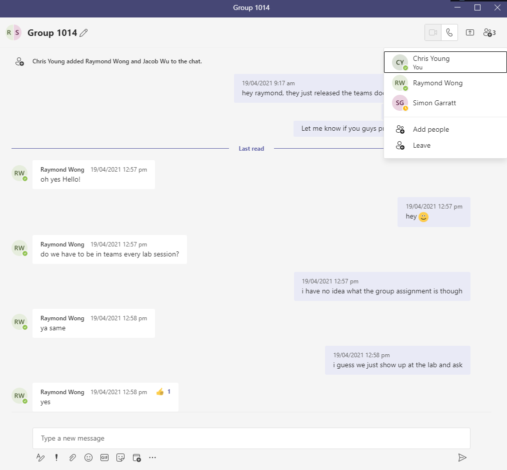

Meeting Minutes
We used Microsoft Teams Chat to coordinate everything, and github to cocreate the website together.

Team name: 1014
Team Coordinator/Leader: No Leader
Team 1014 github repository
Note: the preferred option will be to replace these links in your site with equivalent links to your repository e.g. teams or dropbox